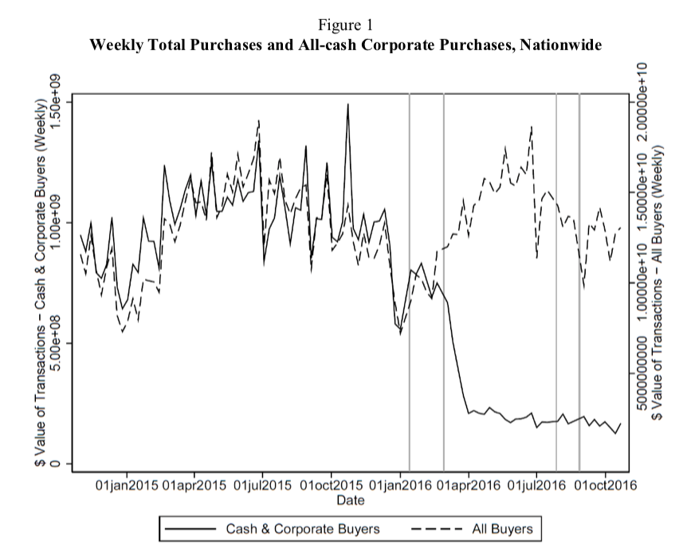

Housing Prices and Homeownership
Patricia Bilezikjian
Supervisor: Ulf von Lilienfeld
Motivation
“Reduced house prices allow households to become homeowners
because the minimum down payment required to purchase a house falls.”
Sommer and Sullivan (AER, 2018)
Research question
- Is it possible to isolate decrease in house prices from other determinants of homeownership?
ENDOGENEITY - prices, rates, income
- How homeownership reacts to an exogenous shock in housing prices?
- Can this reveal by how much potential homeowners were constrained by down payment?
Importance
- housing is the main asset of a household
- housing crisis in main metropolitan areas
- welfare of homeowners x homeowners-to-be
Methodology
- Natural experiment
- Experiment nice features:
- buyers that want to keep secrecy - dont affect homeownership rates (residency anywherelse)
- activity of these marginal buyers is not affected by mortgage rates or tax exemptions
- change in house prices not linked to economic activity
- Data
- county level housing price series Zillow
- ACS/Census 1 year
Contribution
- Literature on tenure choices - empirics and price shocks only
- Rosen & Rosen, Sinai, Glaezer
- relative costs of owning x renting
- implications of interest deduction
- Real Estate GTO as a natural experiment for housing prices shocks
- Hundtofte & Rantala (WP, 2018)
Fundamentals
- Propensity to become homeowner
- cost of ownership x rental (includes tax exemption and real estate taxes)
- hedge cost of housing services
- investment
- consumer confidence
- mobility
- tenure choices available
- bequests motives
- on, on, on...
- Budget constraint:
- capacity to repay mortgage + interest with income
- down payment
Affordability
\(\frac{30\% \text{median income}_{HH}}{\text{pmt}_\text{median house sales price}}\)
GTOs
- GTOs - Geographic Targeting Orders
- issued by FinCen - Treasury's department of Financial Crimes Enforcement Network
- aditional recordkeeping and reporting requirements to agents
- transactions above a threshold
- valid for 180 days
Real Estate GTOs
- Residential real state can be used for money laundering:
- purchaser is a company
- no loans involved
- final beneficiary is unknown
- Real Estate GTOs
- 1 and 2
- varied thresholds
- first on March/2016, last May/2020
- report the beneficial owners to FinCEN (later 25%)
GTO lit
- size and impact of anonymity-seeking capital on US housing markets
- Hundtofte, Rantala (WP, 2018)
- all-cash corporate residential real estate purchases drop from 10% to 2.5% (US$)
- decline in top-tier prices 4-5% (hedonic model)first 2 waves

GTO lit
- My take:
- aim in experiment is the exogenous shock (not AML/mismeasurement of international flows)
- main effects are on 4 and 6 waves
- synthetic control: build counterfactuals based on fundamentals for each local market (not just pool of not treated)
- take into account impact of thresholds on each particular market
Conclusion
WORK IN PROGRESS
- Preliminary work on how an exogenous shock in house prices affects homeownership rates on main metropolitan areas in the US.
- Next steps:
- conterfactuals - synthetic control... (change in prices and homeownership)
- use disagregate transaction data
Housing Prices and Homeownership
Patricia Bilezikjian
Supervisor: Ulf von Lilienfeld
Housing prices and Homeownership / Bilezikjian and Lilienfed